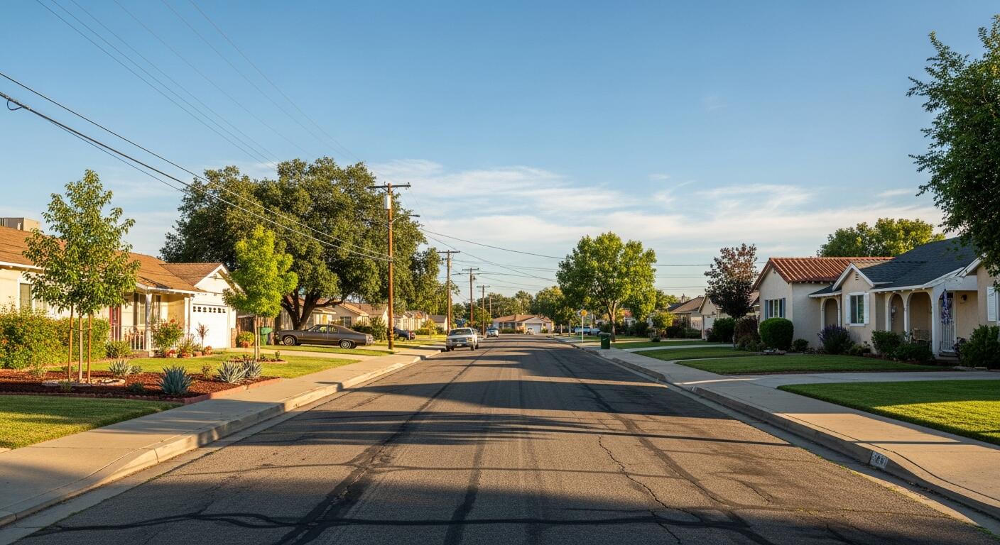
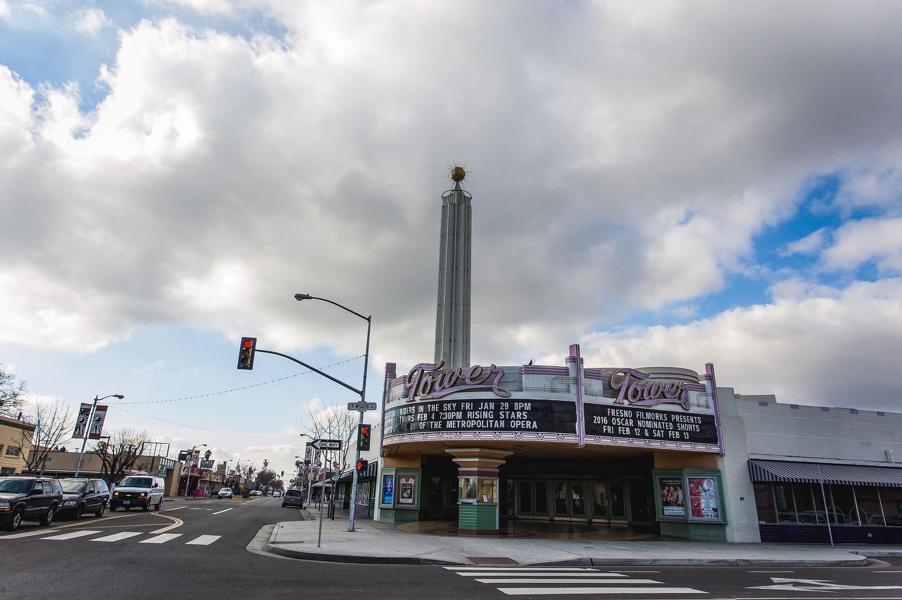

24-year-old Santa Maria man in critical condition after alleged home invasion, threats, and confrontation with Fresno deputy
On the evening of July 14, 2026, Fresno County Sheriff's deputies responded to two related incidents involving a man who allegedly broke into an occupied home and later threatened residents at a second location. The suspect has been identified as 24-year-old Juwan Priddie of Santa Maria, California. He remains hospitalized in critical condition after a physical struggle with a deputy that ended with the deputy discharging his firearm. Priddie faces seven serious charges and has been electronically booked into jail with bail set at $100,000.
Around 6:30 pm on Tuesday, July 14, 2026, a deputy responded to a home near Olive and Cornelia Avenues in Fresno. A man had broken down the door of an occupied residence. The suspect fled before the deputy arrived. Homeowners described the individual as a taller Black man driving a white work van with a ladder rack.
About 20 minutes later, a 911 call came in from a home on Garfield Avenue, south of Shields Avenue. Residents reported a taller Black man in a white work van on their property, threatening to kill them and refusing to leave. Matching the description from the first scene, the deputy responded to the Garfield location.
The deputy contacted the suspect next to his van. A physical struggle ensued, and the deputy fired his gun, striking the suspect. Assisting deputies arrived and provided immediate medical aid. EMS personnel transported the suspect to a local hospital, where he is listed in critical condition. The deputy was later transported to the hospital for treatment of minor injuries.
Juwan Priddie has been electronically booked into jail and faces the following charges:
Both the suspect and the deputy received prompt medical attention at the scene. The deputy’s minor injuries were treated at a local hospital. The suspect remains in critical condition as of the latest update.
Deputy-involved shootings in California are subject to thorough investigation, often including review by the California Department of Justice or independent oversight, consistent with state protocols for use-of-force incidents.
The incidents occurred in Fresno neighborhoods, with residents at both homes reporting a consistent description of the suspect and vehicle. Home invasions and threats to residents remain serious concerns for Fresno communities, including areas monitored by active neighborhood and crime watch groups.


If you have any information about the suspect, recognize the white work van with ladder rack, or witnessed any part of these incidents, please contact Detective Jose Leon at 559-600-8221. You may also contact Valley Crime Stoppers at 559-498-7867 or www.valleycrimestoppers.org. Tips can be submitted anonymously, and eligible callers may receive a cash reward.
Reference the official Fresno County Sheriff's Office release for this incident.
Stay vigilant. Report suspicious activity. Support neighbors. These incidents remind us that community awareness and rapid reporting to law enforcement save lives and help hold offenders accountable.